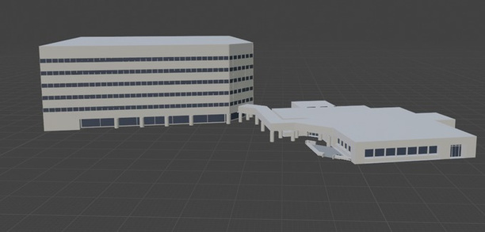
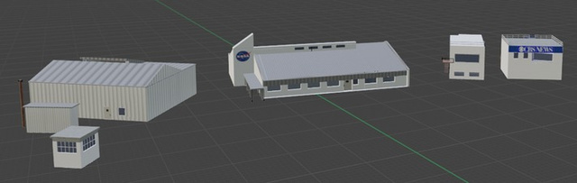

02 / 3D MODELING + SIMULATION
Digital
Twins

Detailed virtual environments for understanding complex spaces before stepping into them.
CONTEXTNASA systems and infrastructure
ROLE3D modeling and environment preparation
TOOLSBlender · Unreal Engine
THE BRIEF
Create accurate digital versions of NASA systems and infrastructure that could be used for technician training. The virtual environment needed to let users examine, explore, and interact with complex facilities in a safe setting.
APPROACH
- Modeled the physical sites and structures in Blender.
- Prepared the resulting assets for real-time use in Unreal Engine.
- Organized the environment around clear spatial understanding and exploration.
- Focused on practical training value, not just visual representation.
WHY IT MATTERS
A digital twin can make a high-consequence or difficult-to-access environment available for practice. It is a way to build familiarity before work happens in the real facility.
MORE IMAGES

